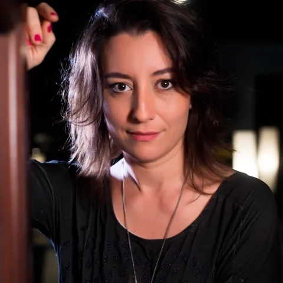
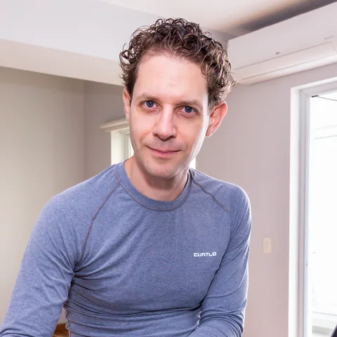

Press kit · EPK · updated August 2026
Sinestesia is a live audiovisual performance by a Brazilian duo based in Lisbon. As Daniella Alcarpe sings, a real-time engine listens to each sung line and paints one continuous artwork projected on stage, seconds behind her voice. One song becomes one painting, born in front of the room. The engine can run fully offline.
Watch · the showreel
Sinestesia in 90 seconds
The short cut for programmers and press: the wall painting itself as the song is sung. On YouTube.
Watch · full live performance
NFC Summit Lisbon — the premiere
Unedited footage of the first public show. On YouTube.
Read · the instrument itself
Under the hood
The full pipeline — speech, director, painting, provenance — explained for engineers and press.

Voice · artistic curation
Brazilian singer with a fifteen-year career across MPB and jazz — three albums, stages including SESC São Paulo, Blue Note SP and Theatro Municipal — dedicated to the research of great Brazilian composers and the art of delicate interpretation. In Sinestesia she is the performance's clock and author: every brushstroke is gated on a line she has actually sung. alcarpe.com.br

Guitar · systems engineering
Engineer and musician; PhD in Computer Science (University of São Paulo), serial entrepreneur and a national poetry award winner. He builds and operates the engine on stage: streaming speech recognition, an LLM director holding the whole song's context, one continuous canvas. daniel.cukier.xyz
| Format | Live audiovisual concert, 15–60 min. Also bookable as an AV layer behind a resident singer, as a voice-reactive installation, or as a talk with a live demo. |
| Members | Two — voice + guitar/live systems. From Brazil, based in Lisbon, Portugal. |
| Premiere | NFC Summit Lisbon, 2026. |
| Rider | One page: projector or LED wall (1080p+), PA with a vocal feed, a table, power. Internet optional — a fully offline mode exists. Soundcheck 60 min. We tour the compute. Full rider → |
| Provenance | Each show records what was sung, what was painted, by which model, and when — mintable as a verifiable certificate of that one night. How it works → |
Press photos · high-res
Portraits of Daniella Alcarpe and Daniel Cukier — click to download the high-res originals.
Booking & press contact
We answer within 24h, and we'll happily do a live two-minute demo on a call: she sings, you watch the canvas paint itself.
{kind=link}
{kind=link}